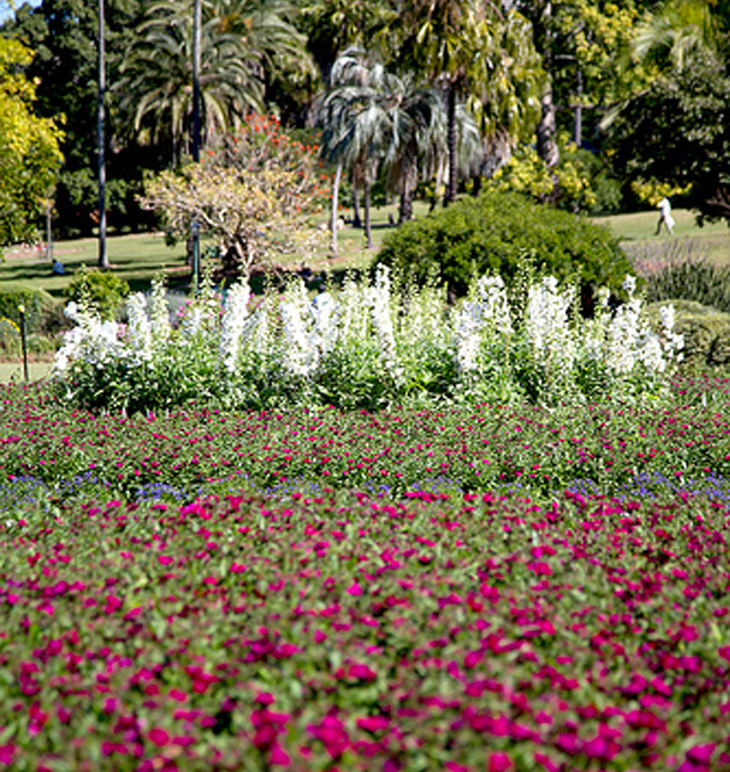

Camera 1: Wedding Lawn
Select the plant to view more information on the name and type of plant
White Snapdragons native, annual, 50cm height Read More here>>

Select the plant to view more information on the name and type of plant
White Snapdragons native, annual, 50cm height Read More here>>